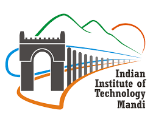

INSTITUTE
Nestled in the Sivalik Range of the Himalayas, away from the bustle of the metropolis, a new abode of learning has germinated. A few hours before the Himalayan resort Kullu in Himachal Pradesh, IIT Mandi has been established with the vision to be a leader in science and technology education, knowledge creation and innovation, in an India marching towards a just, inclusive and sustainable society.
VISION AND MISSION
VISION
To be a leader in science and technology education, knowledge creation and innovation, in an India marching towards a just, inclusive and sustainable society.
MISSION
To create knowledge through team effort and individually for the benefit of society.
To impart education to produce professionals capable of leading efforts towards innovative products and processes for the development of the Himalayan region in particular and our country and humanity in general.
To inculcate a spirit of entrepreneurship and to impart the ability to devise globally recognized solutions for the problems of society and industry, particularly in the fragile eco-system of the Himalayas.
To train teachers capable of inspiring the next generation of engineers, scientists and researchers.
To work intensely with industry in pursuit of the above goals of education and research, leading to the development of cutting edge and commercially-viable technologies.
To operate in an ambience marked by overriding respect for ability and merit.
LOGO

Theme: The freedom to learn from the limitless domain of knowledge and the freedom to be unique.
Composition: The suspension bridge of Mandi, an engineering marvel, is the focal point of the logo with the symbolic representation of hills, sun and the Beas.
Meaning: Far from the maddening crowd, this bower of education is endowed with invigorating lush green surroundings. The sun rises on these mountains to spread the hue of true knowledge. The Beas, unaware of its own majesty, flows beneath an engineering marvel - a century old suspension bridge of the historical Mandi town.
Symbolism: Three colours are used in the logo, viz., blue, green and orange. Blue signifies limitless sky, thus symbolizes the vast expanse of knowledge. Green signifies vegetation, youth and freshness of ideas. Orange signifies energy and the spirit of dedication. The depth in the logo signifies unending quest for excellence. The bridge, which is a specimen of the cutting edge engineering skills of the yesteryears, portends similar wondrous creations by the students of IIT Mandi.
Thus, the logo depicts what IIT Mandi is - a youthful and a vibrant destination for the steadfast pursuit of knowledge and excellence!. The IIT Mandi logo has been designed by Dr. Ila Gupta, Associate Professor, Department of Architecture, IIT Roorkee.